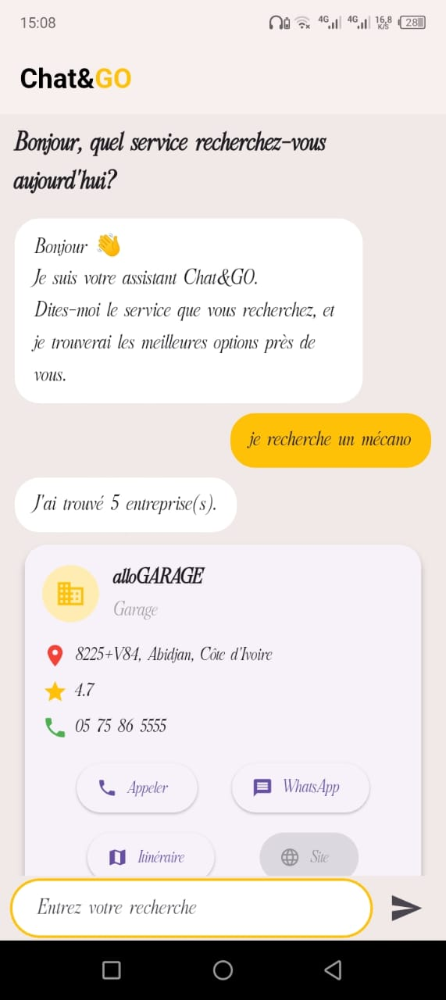

Chat&Go
Chat&Go est une application mobile de commerce conversationnel permettant aux utilisateurs de rechercher des commerces, d'obtenir des informations grâce à un agent conversationnel et de contacter directement les établissements.
Un assistant conversationnel pour découvrir des commerces
Le besoin
Les utilisateurs peuvent avoir besoin de trouver rapidement un commerce, un restaurant ou un service correspondant à leur recherche, tout en obtenant des informations utiles sans devoir parcourir plusieurs plateformes.
La solution
Chat&Go propose une interface mobile permettant d'interagir avec un agent conversationnel afin d'effectuer une recherche et d'obtenir des informations sur les établissements correspondants.
Type de projet
Application mobile intégrant un backend API, des services de recherche géographique et une couche conversationnelle basée sur l'intelligence artificielle.
Objectif
Simplifier la recherche d'établissements et permettre à l'utilisateur de passer rapidement de la recherche à la prise de contact.
Une expérience pensée autour de la conversation
Recherche conversationnelle
L'utilisateur peut formuler sa demande naturellement et interagir avec l'agent conversationnel pour rechercher un commerce ou un service.
Informations sur les établissements
Les informations récupérées permettent de présenter les établissements correspondant à la recherche de l'utilisateur.
Localisation
L'intégration de Google Places permet d'utiliser des informations liées aux établissements et à leur localisation.
Prise de contact
L'application facilite le passage de la recherche à l'action grâce à la possibilité de contacter directement un établissement par téléphone ou via WhatsApp.
Une architecture mobile connectée à plusieurs services
Frontend — Flutter
L'application mobile est développée avec Flutter et Dart. Cette couche prend en charge l'interface utilisateur, la navigation et les interactions avec les fonctionnalités de l'application.
Backend — FastAPI
FastAPI est utilisé pour développer l'API backend chargée de gérer les requêtes provenant de l'application mobile et de communiquer avec les différents services.
Intelligence artificielle
Une couche conversationnelle basée sur un modèle de langage permet de traiter les demandes de l'utilisateur et de construire une interaction plus naturelle.
Google Places
Google Places API est utilisé pour récupérer des informations relatives aux établissements recherchés.
Du message utilisateur à la réponse

Architecture simplifiée de l'application Chat&Go.
Une interface mobile centrée sur l'utilisateur

Aperçu de l'interface mobile de Chat&Go.
Technologies et compétences mises en pratique
Développement mobile
Flutter, Dart, conception d'interfaces mobiles et navigation entre les différentes vues.
Backend & API
Python, FastAPI, création d'API et communication entre l'application mobile et les services backend.
Intelligence artificielle
Intégration d'un modèle conversationnel afin d'améliorer l'interaction entre l'utilisateur et l'application.
Services externes
Intégration de services externes comme Google Places pour enrichir les informations proposées par l'application.
Conception d'application
Réflexion autour de l'expérience utilisateur, de l'organisation des fonctionnalités et de l'architecture globale de la solution.
Communication
Mise en relation de l'utilisateur avec les établissements via des moyens de contact directs.
Ce que ce projet m'a permis de développer
Ce projet m'a permis de mettre en pratique le développement mobile avec Flutter, la conception d'une API avec FastAPI et l'intégration de services externes et d'une solution conversationnelle basée sur l'intelligence artificielle.